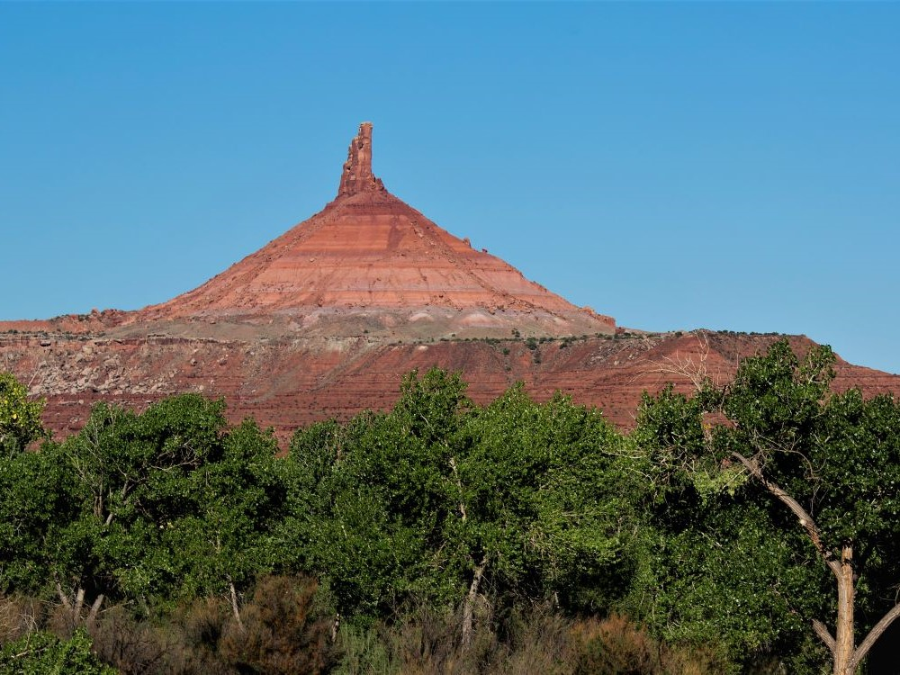
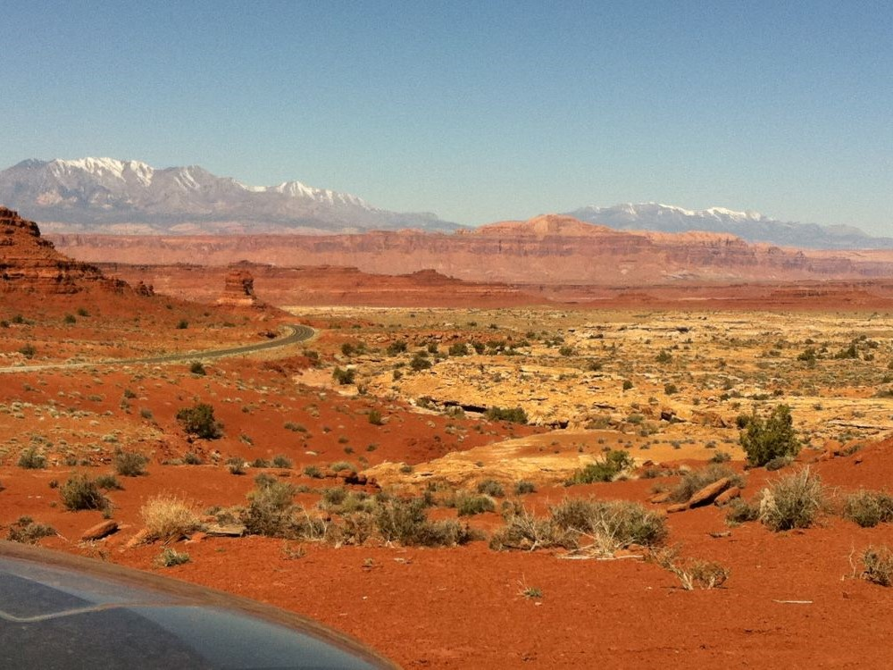
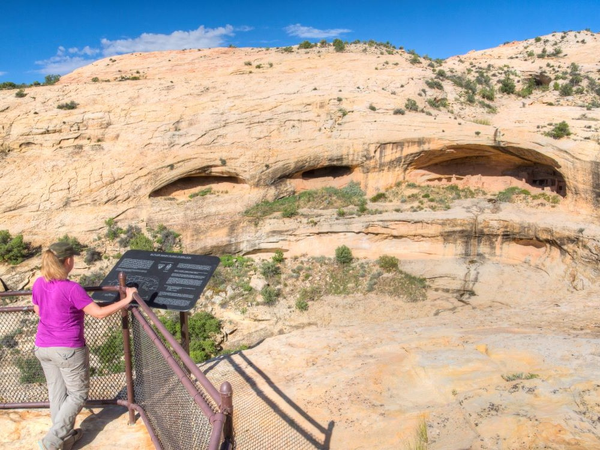
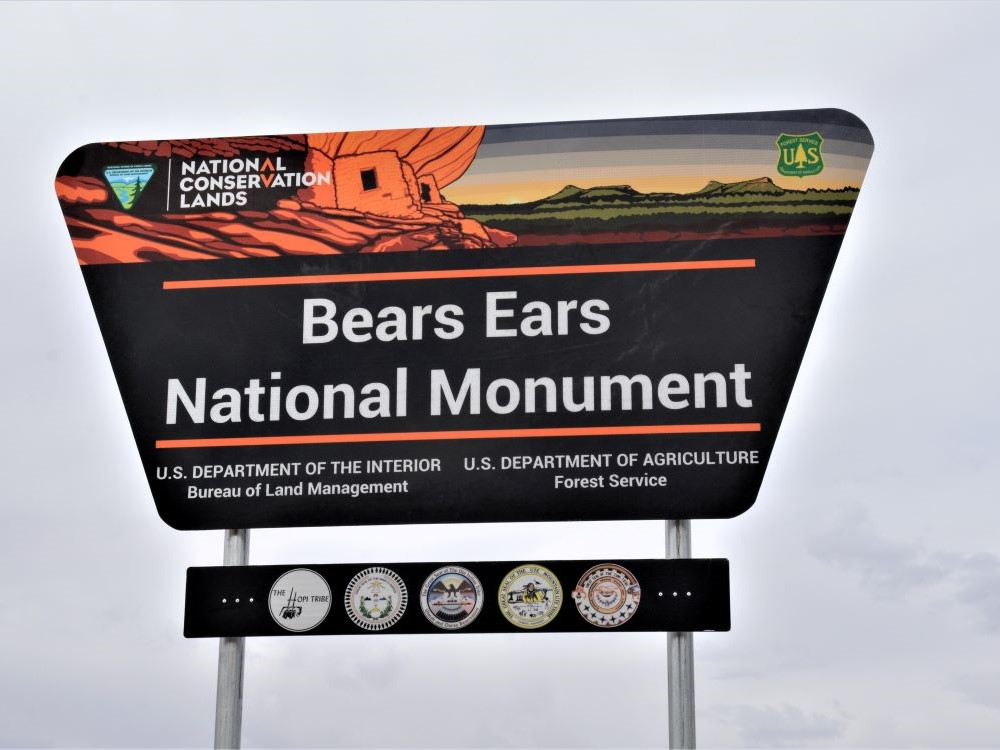
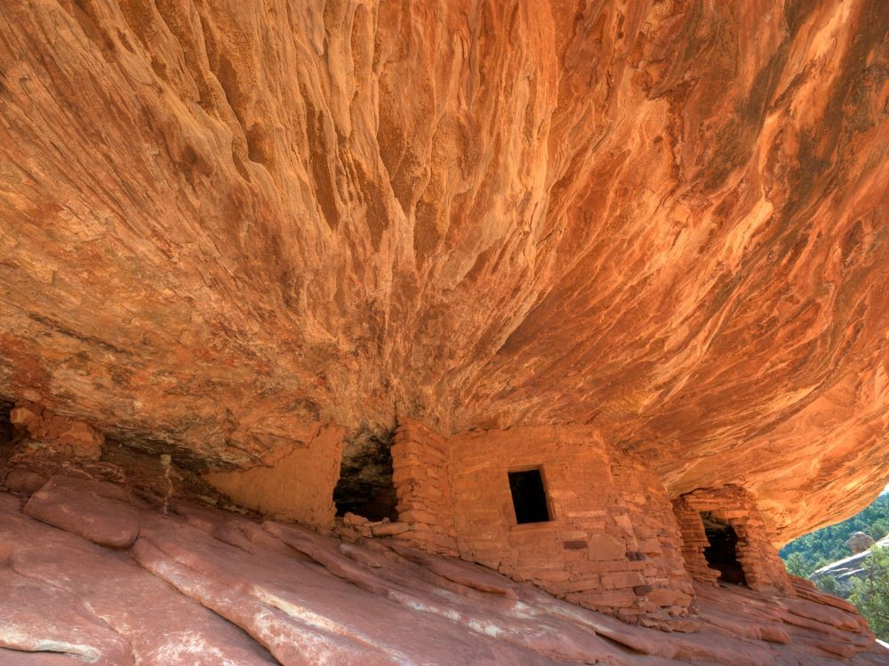
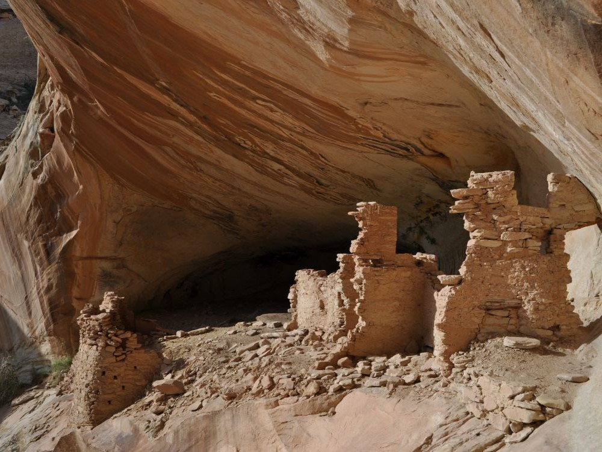
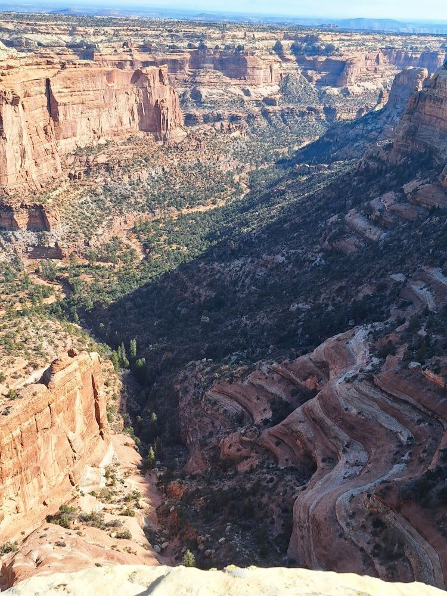

Expansive high desert landscape rich in archaeological sites, sacred Indigenous landmarks, and rugged canyons ideal for hiking, camping, and cultural exploration.
General Information
Visitor centers have seasonal hours
Permits required for Cedar Mesa hikes and San Juan River trips
How to Get There
From Moab (120 mi): Take US-191 S to Blanding, then head west on UT-95 to access the northern section or south on UT-191 to Bluff and west on UT-162 for southern access points.
Overview
Bears Ears National Monument protects a vast landscape of canyons, mesas, buttes and forests in southeastern Utah, named for the twin buttes that rise above the horizon, and it holds thousands of archaeological and sacred sites, including cliff dwellings, rock art and ancient roads. It was established by President Barack Obama on December 28, 2016, under the Antiquities Act, after a proposal led by tribes including the Navajo Nation, Hopi, Ute Mountain Ute, Ute Indian Tribe of the Uintah and Ouray Reservation and Pueblo of Zuni, and it is managed by the Bureau of Land Management and U.S. Forest Service in consultation with tribal nations. The monument was reduced in 2017, restored to about 1.36 million acres in 2021, and reduced again by a presidential proclamation in July 2026, with legal challenges ongoing, so check the BLM for the current boundaries before you go. Visitors come to hike to ruins like House on Fire, explore Cedar Mesa and Mule Canyon, drive past the Valley of the Gods, and enjoy the solitude and dark skies of the high desert.
Access
The monument surrounds the small towns of Blanding, Bluff and Monticello, which are the best bases for exploring, and it is reached by Highways 191, 211, 95, 261 and 163. Moab is about 120 miles to the north. Most visitors arrive by car, and the nearest commercial airports are in cities such as Salt Lake City, Grand Junction and Cortez. Many roads in the monument are unpaved, and some require high clearance or four-wheel drive, especially after rain, when dirt roads can become impassable. Cell service is very limited, and there are few services, so carry water, food, fuel and a map. Permits are required for certain areas, including day and overnight use on Cedar Mesa and San Juan River trips, and visitors are asked to follow “Visit with Respect” guidelines to protect fragile sites.
Seasons
Spring and fall are the best seasons, with comfortable temperatures for hiking and exploring canyons. Summer is hot and exposed, and afternoon monsoon storms from July into September can cause flash floods in canyons and make dirt roads impassable. Winter is cold, with snow at higher elevations such as the Bears Ears buttes, and some roads and trailheads may be difficult to reach. The Kane Gulch Ranger Station, where Cedar Mesa permits are issued, is staffed only during spring and fall, roughly March 1 to June 15 and September 1 to October 31, so plan permits in advance during the off-season.
Things to Do
Explore a Landscape Rich in Cultural and Natural History
Bears Ears National Monument protects more than one million acres of canyons, mesas, buttes, deserts, forests, and archaeological sites in southeastern Utah. Named for the twin buttes that rise above the landscape, the monument is considered one of the most culturally significant areas in the American Southwest, containing thousands of archaeological and sacred sites associated with Indigenous peoples.
Discover Ancient Cliff Dwellings and Rock Art
The monument contains an extraordinary concentration of Ancestral Puebloan ruins, granaries, petroglyphs, pictographs, and ancient roads. Visitors can explore remarkable archaeological sites that provide insight into thousands of years of human history and cultural traditions throughout the region.
Visit Mule Canyon and House on Fire Ruin
One of the monument's most photographed attractions, House on Fire Ruin is a spectacular Ancestral Puebloan structure built beneath a rock overhang. When illuminated by sunlight, the sandstone above the ruin resembles flames, creating a unique and memorable sight.
Explore Valley of the Gods
Located near the monument, Valley of the Gods features towering sandstone buttes, colorful desert landscapes, and scenic backcountry roads. Often compared to Monument Valley, the area provides exceptional photography opportunities and dramatic views of Utah's canyon country.
Drive the Scenic Moki Dugway
The Moki Dugway is a steep gravel road carved into towering cliffs that offers breathtaking views of Cedar Mesa, Valley of the Gods, and the surrounding desert landscape. It is one of the most scenic and memorable driving experiences in the Southwest.
Experience Exceptional Stargazing and Wilderness
Because of its remote location and minimal light pollution, Bears Ears National Monument offers outstanding night sky viewing. Visitors can enjoy dark skies, incredible views of the Milky Way, camping opportunities, and a wilderness experience that feels largely unchanged from centuries past.
Top Trails
House on Fire Trail
Length: Approximately 1.5 miles round trip
Elevation Gain: Approximately 70 feet
Difficulty: Easy
This popular hike follows Mule Canyon to the famous House on Fire Ruin. The trail is relatively short and provides access to one of the most iconic archaeological sites in the Bears Ears region.
Moon House Ruin Trail
Length: Approximately 4 miles round trip
Elevation Gain: Moderate
Difficulty: Moderate
This trail leads to one of the most impressive archaeological sites on Cedar Mesa. Visitors can view a remarkably preserved cliff dwelling complex featuring numerous rooms, intricate masonry, and significant cultural resources.
Kane Gulch Trail
Length: Approximately 6 to 10 miles round trip depending on route
Elevation Gain: Moderate
Difficulty: Moderate to Strenuous
A gateway to Cedar Mesa, Kane Gulch offers access to numerous archaeological sites, rock art panels, canyons, and scenic overlooks. The trail provides an excellent introduction to the monument's cultural and natural resources.
Bullet Canyon Trail
Length: Approximately 6 miles round trip
Elevation Gain: Moderate
Difficulty: Moderate
This scenic canyon hike passes natural alcoves, archaeological sites, and desert landscapes while providing access to the renowned Perfect Kiva, one of the region's most notable ancestral ceremonial structures.
Visitor Centers
The Kane Gulch Ranger Station on Cedar Mesa is the main place to get permits, trail information and advice for hiking Cedar Mesa canyons, including permits for Moon House, and it is open in the spring and fall for limited morning hours. Check the BLM website or call the Monticello Field Office at (435) 587-1500 for current hours. The Bears Ears Education Center in Bluff, at 567 West Main Street, provides information about the monument and the tribal nations connected to it, with limited weekly hours. The Monticello Field Office at 365 North Main Street is the BLM’s main administrative office for the area.
Camping and Lodging
Camping within the monument is mostly primitive and dispersed, with no facilities, and campers must follow rules that protect archaeological sites. Natural Bridges National Monument, nearby, has a campground, and other developed campgrounds are found elsewhere in the region. Hotels, motels and restaurants are available in Blanding (about 20 miles), Bluff (about 30 miles) and Monticello, and near Mexican Hat, with Moab to the north offering a wider choice of lodging. Lodging in the small towns of the region fills quickly in the spring and fall, so book ahead.
Sources: Bureau of Land Management official Bears Ears National Monument information, including details on cultural resources, archaeological sites, recreation opportunities, scenic drives, and monument management.
https://www.blm.gov/programs/national-conservation-lands/utah/bears-ears-national-monument
Additional information verified through Bears Ears Partnership and public lands resources covering Cedar Mesa, House on Fire Ruin, Moon House Ruin, Kane Gulch, Indigenous cultural significance, and visitor stewardship information.
https://bearsearspartnership.org/
Further trail and recreation information reviewed through Bureau of Land Management recreation guides covering Valley of the Gods, Moki Dugway, Bullet Canyon, archaeological sites, hiking opportunities, and backcountry travel within Bears Ears National Monument.
https://www.blm.gov/visit/valley-gods
This article uses material from the Wikipedia articles and official tourism pages for Bears Ears National Monument, which are released under the Creative Commons Attribution-Share-Alike License 3.0. Additional information from Bureau of Land Management.





.jpg){kind=link}

.jpg){kind=link}





.jpg){kind=link}